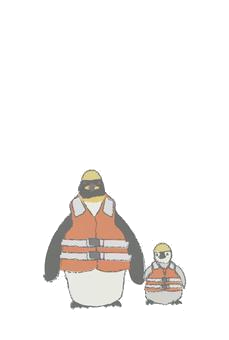

質問
動物園や水族館で飼育されているものではなく、野生のコウテイペンギンを見てみたいです。
どこに行けば野生のコウテイペンギンを見ることができますか？
また、ペンギンツアーのようなものを用意している旅行会社があったら教えてほしいです。
回答
コウテイペンギンは南極に生息しています（ナショナルジオグラフィック）。 いくつかの旅行会社から南極ツアーが用意されており、そのツアーの中でペンギンを見ることができるようです。
１． 株式会社クルーズライフ
また、上記旅行会社のツアーでは、以下の装備が推奨されています。
２. 株式会社ユーラシア旅行社
３. 読売旅行
４. Polarcruise
などの旅行会社でペンギンが見られるツアーが用意されています。
また、南極へ旅行に行く際の注意点に関して環境省のホームページで説明されています。
回答・調査プロセス
Googleで「コウテイペンギン 生息地」と検索。出てきたサイトをもとに回答を作成。
Googleで「南極 コウテイペンギン ツアー」と検索。出てきたサイトをもとに回答を作成。
情報資源
キーワード